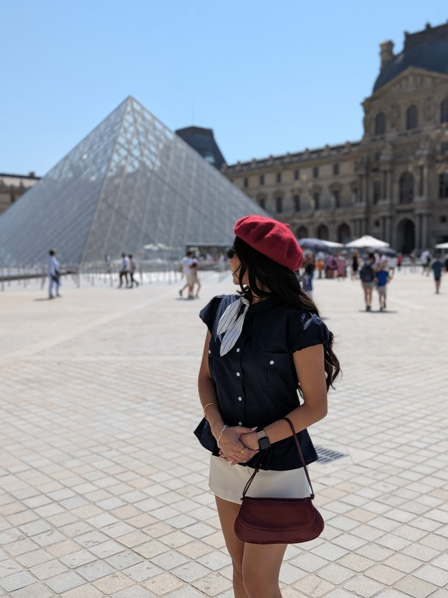
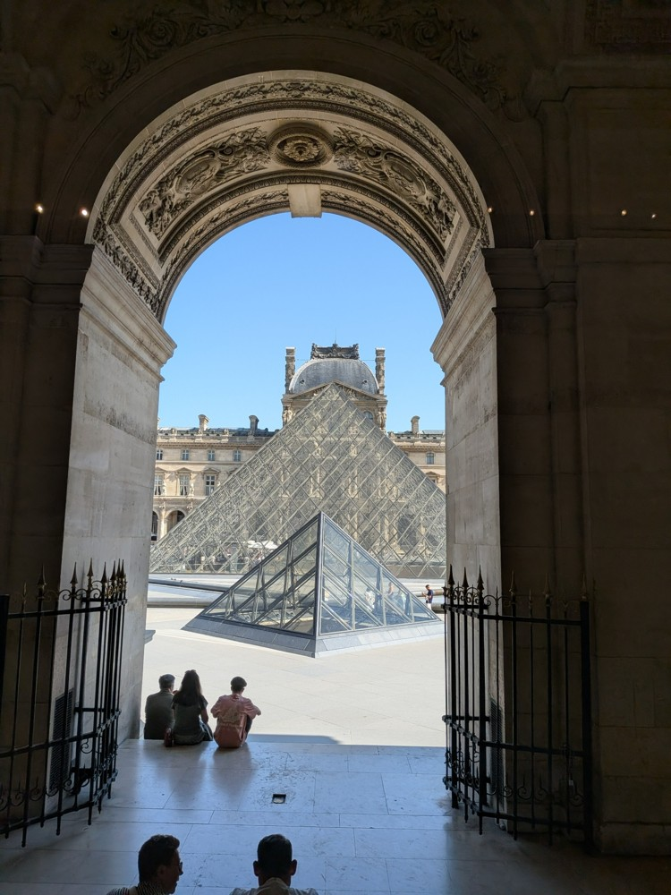
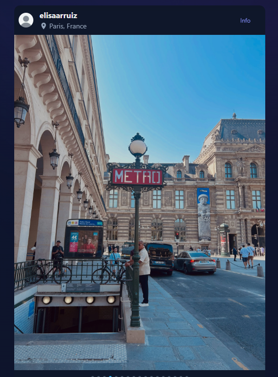

Visual match · 1 of 17
Same pose, hands, pyramid and background visitors.


Open source file
Claimant: Hassan A. Khalifeh · Reported account: @elisaarruiz · Updated 14 October 2026
Reported location supplied by claimant: https://www.instagram.com/p/DdC9DmTmZWzI6WMwIv5oTDmLN9M-wQfHnFb7VY0/
Full supplied screenshots are preserved below. Source previews are resized only for display; original source links are provided. “Visual match” means corresponding image content, not byte-identical files or proof of authorship by image matching alone. Slide positions are counted from visible pagination dots; no position is assigned when the indicator is missing or incomplete. Carousel URLs are claimant-supplied because these screenshots do not display the address bar.
| Screenshot | Position | Source | Finding |
|---|---|---|---|
| 120305 | 1 of 17 | P-01 | Visual match |
| 120441 | 13 of 17 | P-05 | Visual match |
| 120321 | Not visible | P-15 | Visual match |
| 120335 | Indicator partly cropped | Not located | Exact original unresolved |
| 120427 | Not visible | P-16 | Visual match |
Same pose, hands, pyramid and background visitors.

Same bicycle, foot and hand positions, building signage and street details.

Same archway, pyramid, seated visitors and foreground people. The posted screenshot crops the supplied original.


IMG_6859.jpg shows the same location, but after geometric alignment the gray car, pedestrian positions and viewpoint still differ. Not included among confirmed matching photographs.

This screenshot is preserved so it is not omitted. It is not presented as a verified reproduction of a supplied original.
Same book angle, fingers, bracelets, clothing and background books. This newly supplied original replaces the previous alternate-frame comparison.

Balcony screenshot 120411 and its alternate frames are excluded at the claimant’s request.
Related reports: 1056378363907479 and 2649127802224453. This page supplements evidence; it does not change previously submitted form text.